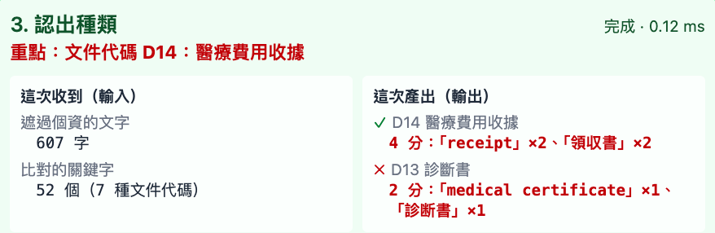
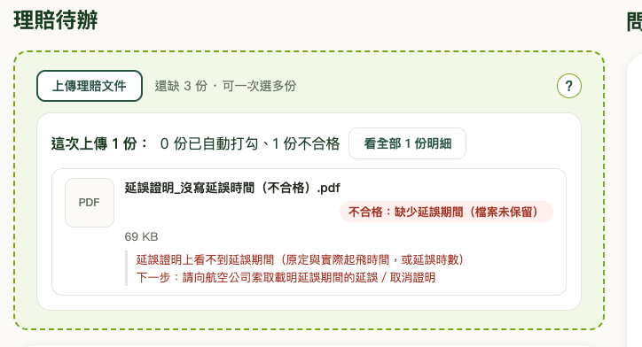

趙翊君（Lala）｜0935-810-845｜AI 解決方案顧問・企業 AI 導入與培訓
做 AI 應用時，我會先決定三件事：哪些交給 AI、哪些交給程式、哪些留給人。
我做過 13 年的客服、金融與保險理賠，也擔任過企業培訓管理師。工作上我習慣先弄清楚第一線的人卡在哪裡，再把處理方式整理成 SOP 和教材，帶新人練到能獨立上手。
現在我用 AI 工具把這些做法變成可以試用的系統：客服知識庫、客服對話評分、企業 AI 導入診斷、培訓教材產生器，以及團隊與個人專題裡的 RAG 知識庫和語音 App。
在職訓課程學到的：用系統分析的方法做需求訪談、畫流程圖；用 Azure 串接文字分析、語音與文件辨識服務；理解 RAG 知識庫如何切分文件、檢索並回答；也跟著實作 API、LINE Bot 與 Docker 雲端部署。我的目標不是成為工程師，而是在和客戶討論方案時，能判斷技術上做不做得到、需要準備哪些資料，並和工程團隊用同一種語言溝通。
- 經歷
- 客服、金融、保險理賠、企業培訓，共 13 年
- 學習中
- 緯育 TibaMe 商務 AI 應用開發人才養成班（職訓課程，12/3 結訓）：Python、系統分析、Azure AI 服務、NLP 與 LLM 應用、RAG、雲端資料庫、Git／GitHub、Docker 部署、規格驅動開發（SDD）、敏捷專案管理
- 工具
- Dify、Lovable、Azure AI、Gemini、Flutter，並用 Codex 協作開發
- 目標
- AI 解決方案顧問、售前顧問、企業 AI 導入與培訓
六個作品，挑你有興趣的點進去
也可以用上方選單切換。每個作品都有自己的頁面。
- 1好險有你｜旅遊保險 AI 平台7 人團隊作品：推薦與比較旅平險、整理理賠待辦與文件。我負責理賠文件辨識與條文驗證工具。團隊專題
- 2新手 AI 副駕iOS App：用語音問車主手冊、事故時一步步帶完安全流程，已在實體 iPhone 展示。個人專題
- 3Dify 客服知識庫客服新人用一般說法提問，得到依公司 SOP 整理的處理步驟，並看到答案出自哪份文件。可試用
- 4客服 QA 評分與培訓建議主管貼上一段客服對話，得到四個面向的分數、有逐字稿依據的評語與培訓建議。可試用
- 5企業 AI 導入診斷填一份部門流程資訊，得到哪些環節適合導入 AI、先做哪個、哪裡需要人工把關。可試用
- 6AI 教材產生器把口語的訓練錄音逐字稿，整理成新人看得懂的教材、測驗題和簡報大綱。可試用
- AI理解、判斷、產生文字
- 程式規則、計算、檢查、存檔
- 人輸入、確認、做最後決定
每個作品頁都標出：你按下按鈕之後，每一步由 AI、程式還是人負責。所有範例都是虛構資料。
好險有你｜旅遊保險 AI Agent 平台
旅客不知道怎麼選旅平險或準備理賠時，可比較方案並整理理賠待辦與文件。
7 人團隊專題。出發前，從 5 家保險公司的旅平險中推薦並比較方案、依條款回答問題；出事後，整理可能適用的理賠項目、待辦與應備文件，檢查上傳的文件，再協助用旅客自己的 Gmail 送件。系統由 7 個 Agent 分工。
我負責：理賠文件辨識（Agent 6），以及條文入庫前的驗證工具（Agent 2 Validator）。下方頁籤標示「我負責」的部分由我開發與驗收，其他為團隊共同開發。
完整展示影片預計 11/28 公開。
畫面截圖（我負責的理賠文件辨識；皆為模擬文件）

認出種類：比對文件裡的關鍵字，判定這份是「D14 醫療費用收據」。 
遮個資：先換掉電話與姓名 2 處，後面的步驟只看遮過的文字。 
文件不齊就說明原因：延誤證明沒寫延誤期間，標示不合格，並提示向航空公司索取。
使用技術
旅客還沒買保險，想知道哪個方案適合這趟旅行。
- 人
排好旅遊日程，選出最在意的 3 件事
例如班機延誤、海外就醫。日程也可以請瀏覽器裡的小助理透過 WebMCP 協助排。
- AI
讀日程，替每個在意點判斷「加強保障」或「基本保障」
對照每個在意點的加重情況清單，並附一句點出日程活動的原因，不含任何金額。
- 程式
從所有「方案 × 保額」組合中挑出推薦方案
依需求等級篩選額度後取保費最低者，再選一個更便宜的對照方案。保費、保額全部由程式計算。
- 程式
情境試算
例如延誤 8 小時能領多少，由程式依給付規則查表計算，不經 AI。
- AI
回答兩個方案的差異
從條款庫檢索相關條文後回答，附條款依據；資料裡沒有的就說請參考條款。
- 人
旅客自己決定要不要投保
網站只推薦與說明，不經手投保。
旅途中出事了，旅客想知道能不能理賠、要準備什麼。
- 人
上傳保單 PDF
- 程式
抽出險種代碼，和條款庫完全比對
對不上就不建立保單，不讓 AI 猜是哪個方案。
- 人
用一般說法描述發生了什麼事
- AI
辨識事故類型，追問必要資訊
例如發生日期、延誤幾小時。要不要繼續問由程式依必填欄位決定，AI 不自己判斷「問夠了」。
- AI
依條款判斷每個保障項目，並列出待辦
只用三種結論：可能適用、依條款不在保障範圍、目前資訊不足以判斷，並附條款依據；不說「一定會賠」。
- 人
確認現況總結後才存下
之後有新狀況可以再補充，待辦會跟著更新。
旅客依待辦上傳文件，例如航空公司開立的延誤證明。
- 人
旅客上傳理賠文件
- AI
讀出文件文字，辨識是哪一種文件
使用 Azure Document Intelligence；影像模糊讀不出來就回「無法辨識」。
- 程式
對應到這趟行程現有的待辦
對不到任何一項就回「辨識失敗」，不猜；可能對應多項時，讓旅客自己選。
- 程式
依理賠文件規則檢查必要資訊
例如延誤證明缺少延誤期間，就提示向航空公司補件。
- 程式
達成完成條件就自動勾選待辦，遮蔽個資後存到旅客自己的 Google Drive
畫面逐步顯示：讀取內容 → 對應待辦 → 檢查規則。
- 人
依提示補件，或確認 AI 不確定的對應
驗收：以 63 份模擬文件比較本機 OCR 與 Azure Document Intelligence，並用 Python 驗收待辦配對、個資遮蔽與存檔失敗等情境。
文件備齊後，協助旅客寄給保險公司。
- 程式
還缺文件時寄提醒信
缺文件滿 24 小時寄第一封，之後每 3 天一封，最多 3 封；由 Celery 定時排程。
- 人
選「小助理幫我送出」，授權自己的 Gmail
- 程式
從 Google Drive 取出已完成的文件，依規則命名當附件
保單資訊與附件清單由程式帶入。
- AI
撰寫信件的申請說明與每個事故的摘要
不寫金額與個資，不判讀核賠結果。
- 人
旅客確認後，由自己的 Gmail 寄出
寄出前一定跳出確認視窗。
管理端：把保險條款變成 AI 能查詢、又能回查原文的知識庫。旅客不會看到這一段。
- 程式
取得各保險公司的條款 PDF，切成一條一段
- 程式
入庫前逐條比對原始 PDF
用兩套 PDF 工具建立標準答案，檢查完整性、正確性、切分邊界等面向。
- AI
只確認「工具不確定」的條文
AI 不能放行確定錯誤的條文，也不能改條文。
- 人
沒通過的條文由管理者逐條刪除、修改或放行
- 程式
轉成向量入庫，再自我檢查每一條都查得到
text-embedding-3-large（1024 維），搭配 BM25 關鍵字檢索。
我做的驗證工具：把切分後的條文與原始 PDF 並排比對，在畫面上標示差異，讓團隊回查缺漏、錯字或混入其他條文的地方。
不開網站，也能在 LINE 查自己的比較紀錄和理賠待辦。
- 人
在網站帳號頁產生 6 位數綁定碼，在 LINE 傳「綁定 123456」
綁定碼 10 分鐘內有效，只能用一次。
- 人
在 LINE 傳「待辦」或「比較」
- 程式
透過 MCP 伺服器唯讀查詢，回傳卡片
第一版用固定指令，不用 AI 理解自由文字，回覆內容可預期。
設計考量
- 可驗證：以 63 份模擬文件與 Python 腳本驗收辨識、待辦配對與異常情境，不以單次展示成功當作完成。
- 資料安全：測試只使用模擬文件，並驗證個資遮蔽；團隊設計上，理賠文件存放在使用者自己的 Google Drive，送件由使用者自己的 Gmail 寄出。
- 維護成本：條文先經驗證才入庫，條款改版時可回查差異；團隊原則是保費、保額等數字一律由程式計算，LLM 不產生數字。
新手 AI 副駕
新手駕駛不熟車輛操作或遇到事故時，可用語音問手冊並跟著安全流程處理。
個人專題，Flutter iOS App，已在實體 iPhone 上展示。陪新手獨自上路：用語音問車主手冊並附上手冊頁碼；出事時用語音一步步帶完安全流程；導航、停車與出發前檢查也都在同一個 App。
我負責：需求分析、功能取捨與每個安全邊界的決定（哪些交給 AI、哪些必須用固定內容），透過 ChatGPT 與 Codex 協作實作；建立測試題庫，並在實體 iPhone 上逐項驗證。
使用技術
開車時想知道雨刷、除霧、霧燈怎麼開，直接用說的問，答案只來自這台車的手冊，並附上 PDF 頁碼。
- 程式
事先把 Corolla Altis 車主手冊 PDF 切成段落、記下頁碼並轉成向量
保養排程表另外轉成「項目、里程、月數」文字列。整本手冊不會送給模型。
- 人
用語音提問，例如「雨刷怎麼開」
保留 Apple 語音辨識的原始逐字稿，不要求駕駛修改文字。
- 程式
處理同音錯字與口語說法
從手冊詞彙產生發音相近的候選（例如「儲物」可能是「除霧」），口語對照表把「雙黃燈」對應到手冊的「緊急警示燈」；每個候選都要先在手冊找得到段落。
- 程式
語意＋關鍵字混合檢索，取前 3 段，且盡量來自不同頁
- 程式
回答前先檢查證據夠不夠
相似度與內容覆蓋率的門檻用 31 題校準；不夠就說「手冊找不到足夠資訊」，不讓模型硬答。
- AI
只根據取回的段落，用白話回答
同音候選有多個時，模型只能從通過檢查的候選中選一個，沒把握就請駕駛確認。
- 程式
附上實際取回的 PDF 頁碼並朗讀
頁碼由程式附上，模型不能自己寫頁碼。連不到後端時改用本機答案，並明說目前是離線模式。
手冊問答 40 題批次測試（同音、同義、句型、應拒答）：37 題通過、0 題答錯。
發生事故時，按一下就能用說的，系統一步步問：有沒有人受傷、人在不在安全位置、119 和 110 打了沒。
- 人
按下通話直接開口，可隨時插話
連線完成前的聲音先暫存在手機，最多 5 秒，不會漏掉第一句。
- AI
即時轉成文字，從話中整理出事實
Azure OpenAI Realtime 只能填寫「有沒有人受傷、在哪裡、通知了誰」這類欄位，並要附上駕駛的原話。
- 程式
核對原話後，依官方事故處理規則選下一句
安全指示全是固定稿，依國道公路警察局、高公局與交通規則撰寫；AI 不自由產生安全建議。「如果起火要怎麼辦」這類假設句不會被當成真的起火。
- 程式
播放事先合成的台灣男聲語音
固定句預先合成，說完到開始回答約 0.5～2.5 秒。
- 人
需要撥 119／110 時，由本人在 iPhone 撥號畫面確認撥出
用 170 句規則層測試、60 句 AI 判讀測試，加上兩輪 44 句與 63 句不照劇本的說法壓力測試，判錯的情況逐一修正；也在學校吵雜環境與手機熱點下實機演練。
像 Google 地圖一樣搜尋目的地，導航中也能用語音問手冊問題，不必停下導航。
- 人
打字或用說的找目的地，或按加油站、停車場、充電站
- 程式
打字停頓 0.5 秒自動列出最多 20 個地點，按「路線」直接預覽
注音還在組字時不送出查詢。
- 程式
路線、距離與抵達時間全部取自 Google Navigation SDK
- 程式
接近測速照相時，在約 800 公尺與 200 公尺提醒
資料來自警政署公開資料，1,895 個地點。
- 人
導航中按麥克風問「雨刷怎麼開」
車輛操作問題走車主手冊 RAG；路線問題仍由 SDK 回答。
這個功能刻意不交給 AI 猜：道路、距離與抵達時間必須正確，全部取自 SDK 的實際資料。
新手最常卡住的操作與停車，用圖文一步步看，看不懂可以直接問。
- 程式
雨刷、燈光、方向燈、啟動、排檔、加油、除霧、霧燈八類操作指南
每頁下方的提問與手冊首頁走同一套 RAG 與拒答流程。
- 程式
路邊停車、90° 倒車入庫的圖解步驟，以及儀表板燈號指南
- 程式
出發前、下車前檢查清單與保險聯絡人
只存在手機本機，不送到後端或 AI。
展示能穩定，也要說得出為什麼可以信。
- 程式
金鑰只放在 Mac 後端，手機拿不到
Azure 金鑰存在 Mac 鑰匙圈；手機只拿到展示用 token。
- 程式
手機用一次性配對碼綁定
8 碼配對碼 10 分鐘有效、只能用一次；資料庫只存 token 的雜湊，可撤銷遺失的手機。
- 人
每個題庫的預期答案，都先對照手冊原頁確認
驗收看「前 3 段是否包含正確頁」，不拿模型自評分數當正確率。
- 程式
Python 161 項、Flutter 48 項自動測試
- 人
每次修改後在實體 iPhone 上測代表性情境
模擬器過了不代表實機過，所以語音、導航與權限相關功能一定上實機。
目前限制：後端跑在 Mac 上，手機需在同一網路；未做雲端部署、帳號與多車型。
Dify 客服知識庫
客服新人遇到不熟悉的問題時，可用一般說法提問，取得處理步驟與文件來源。
客服新人遇到問題時，用一般說法提問，就能得到依公司 SOP 整理好的處理步驟，並看到答案出自哪份文件。
怎麼試用
- 按「看 AI 即時執行過程」，點任一個範例問題。
- 左邊是回答，右邊即時顯示這次從 SOP 取回哪幾段、相似度、使用的模型與每一步花的時間。
- 「查訂單」和「員工旅遊補助」兩個範例，示範它遇到做不到或查不到的事時怎麼回答。
使用免費的 Gemini 模型；如果出現「模型忙碌」的提示，等幾秒再送一次即可。
使用技術
按下範例問題之後
流程說明（不是即時畫面）
- 人
客服新人提出問題
例如：信用卡付款、還沒出貨，要確認哪些資訊？
- 程式
到知識庫找出最相關的 3 段 SOP
問題先轉成向量，再和 SOP 段落比對相似度。
- AI
只根據這 3 段內容回答
規則：查不到就說找不到、不能假裝查詢真實訂單、以「客服該怎麼做」的角度回答。
- 程式
附上引用的文件名稱
模型忙碌時自動重試 3 次，仍失敗就顯示提示。
- 人
客服依步驟處理
對顧客的承諾仍由客服本人決定。
設計考量
- 可驗證：以固定測試題檢查回答，發現 SOP 被切成平均 16 字的短段落，導致漏答確認清單；調整段落後重測，回答完整並附上引用來源。
- 資料安全：只依 SOP 回答，查不到就說找不到，也不假裝能查詢真實訂單。
- 維護成本：使用 Gemini 免費方案；SOP 更新時只要替換知識庫文件，不必改程式。
客服 QA 評分與培訓建議
主管需要檢視客服對話時，可貼上逐字稿，取得有原文依據的評語與培訓建議。
主管貼上一段客服對話，就能得到四個面向的分數、有逐字稿依據的評語，以及下一步的培訓建議。
人工現況：依我過去的工作經驗，評一份客服對話約需 10 分鐘（經驗估算；用 AI 之後的實際時間尚未量測）。
怎麼試用
- 開啟作品，按「帶入虛構範例」。
- 可以先修改對話內容，再按「開始評分」。
- 往下捲動，看分數、評語與 AI 培訓建議報告。
使用免費的 Gemini 模型；如果出現「模型忙碌」的提示，等幾秒再送一次即可。
使用技術
按下「開始評分」之後
流程說明（不是即時畫面）
- 人
主管貼上客服逐字稿
範例對話標示為虛構，不代表真實績效。
- 程式
在伺服器端呼叫 Gemini
API 金鑰只存在伺服器，不會出現在網頁裡。
- AI
依四個面向各給 0–25 分，寫評語與培訓建議
每一點都要引用逐字稿原句，禁止空泛形容詞。
- 程式
檢查回傳格式，再由程式加總總分
格式不對就停止並顯示原因，不自動換模型。
- 人
主管依建議安排複訓
分數是討論起點，不直接作為考核。
設計考量
- 可驗證：評語與培訓建議必須引用逐字稿原句；總分由程式加總，不交給 AI 計算。
- 資料安全：只使用虛構逐字稿並標示「非正式績效」；API 金鑰存放在伺服器端。
- 維護成本：直接呼叫 Gemini 免費方案，不經過付費的 AI 閘道。
企業 AI 導入診斷
企業不確定哪些流程適合導入時，可填寫流程資訊，取得導入順序與人工把關建議。
企業還不確定 AI 能做什麼時，先填一份部門流程資訊，就能得到哪些環節適合導入、先做哪個、哪裡需要人工把關的初步報告。
怎麼試用
- 開啟作品，企業流程資訊已預先填好一份虛構的客服 QA 流程。
- 按「開始對話」。
- 點範例問題「請根據我填的企業流程資訊，幫我做 AI 導入診斷」。
使用免費的 Gemini 模型；如果出現「模型忙碌」的提示，等幾秒再送一次即可。
使用技術
按下範例問題之後
流程說明（不是即時畫面）
- 人
填寫部門、流程、頻率、耗時與資料限制
範例：每週 20 份對話、每份 15 分鐘。
- AI
先分析流程，再判斷可以交給 AI 的環節
規則：不保證投資報酬、只用輸入的工時粗估、資訊不足就標示「需要補充」。
- AI
產出十段式報告
痛點、可介入環節、短中長期順序、工時粗估、風險、第一版範圍、培訓建議。
- 程式
模型忙碌時自動重試
重試 3 次仍失敗，就顯示提示。
- 人
主管與顧問討論後決定導入順序
報告中標示需要人工複核的環節。
設計考量
- 可驗證：另以 Python 串接診斷、方案、培訓規劃三個 Agent 實測。第一次測試時，模型自行寫出「節省 60%」等輸入沒有提供的成效；加入證據限制規則後重測，報告改為只依使用者提供的工時粗估。
- 資料安全：範例只使用虛構企業資料，報告中須標示需要人工複核的環節。
- 維護成本：改用 Gemini 免費方案，讓作品能長期公開試用而不產生費用。
AI 教材產生器
培訓人員面對重複、跳躍的口語逐字稿時，可整理成新人教材、測驗與簡報大綱。
把一段口語的訓練錄音逐字稿，整理成新人看得懂的教材、測驗題和簡報大綱。
人工現況：依我過去的工作經驗，整理一份 SOP 約需 30 分鐘（經驗估算；用 AI 之後的實際時間尚未量測）。
按下「執行」之後
流程說明（不是即時畫面）
- 人
培訓人員貼上訓練逐字稿
逐字稿常有贅字、重複和跳躍的口語內容。
- AI
清理口語、整理成教材
輸出教材重點、5 題測驗與簡報大綱。
- 人
培訓人員審稿後使用
AI 產出是初稿，內容正確性由人確認。
導入提案範例：客服品質評分
虛構客戶「某電商客服部」的需求訪談紀錄與導入路線圖，示範我怎麼判斷哪些適合交給 AI。客戶、人數與份數都是為了示範設定的假設；每份評分約 10 分鐘是我的經驗估算。
1. 需求訪談：我會問的五個問題
Q1 現在怎麼評分？
主管每週抽 40 份對話（假設），逐份閱讀、打分、寫評語。
判斷：重複性高、有規則可依，適合讓 AI 先做初評。
Q2 一份要花多久？
約 10 分鐘（我的經驗估算），每週約 40 × 10 分鐘 ≈ 6.7 小時。
判斷：先量出現況工時，導入後才有比較基準。
Q3 評分標準寫在哪裡？
一張 Excel 表，另有一些只在資深主管腦中的標準。
風險：標準沒寫清楚，AI 會跟著不一致。第一步要先把標準寫成可檢查的條目。
Q4 分數用在哪裡？
會當作月度考核的參考。
風險：AI 分數不能直接當考核。定位成「初評」，由主管複核後才算數。
Q5 對話資料能給外部模型看嗎？
逐字稿含顧客姓名與電話，內部有資安規定。
風險：先用去識別化或虛構資料驗證；正式上線前要和資安確認資料送去哪裡。
2. 流程拆解：誰負責哪一步
- 抽樣、遮蔽個資
- 檢查 AI 回傳格式
- 加總分數
- 存檔、留紀錄
- 依評分標準逐項評語
- 引用對話原句當依據
- 整理培訓建議草稿
- 寫出並維護評分標準
- 複核 AI 初評
- 決定考核與複訓安排
這個分法和客服 QA 評分作品相同：分數由程式加總，不交給 AI 計算；每點評語都要附逐字稿原句。
3. 導入路線
短期（約 2 週）：用 20 份去識別化對話跑原型
先把評分標準整理成條目，跑出初評，請主管對照自己的評分。
成功標準：由客戶主管決定，例如「AI 評語方向和主管一致的比例」。
中期（約 1–2 個月）：進入主管日常流程
AI 先評，主管複核並修改；記錄主管改了哪些地方。
用主管的修改紀錄回頭調整標準與提示詞。
長期：串接培訓
把常見扣分點整理成新人複訓內容。
這一步才用到教材整理的工具。
4. 預期效益與風險
- 主管從「每份從頭評」改成「複核 AI 初評」，每週約 6.7 小時的評分工時有機會降低。
- 評分標準被寫清楚，新舊主管的標準比較一致。
- 實際省多少時間，要試跑後量測，這份提案不預設節省百分比。
- 標準不清楚：先整理標準，再導入。
- AI 編造或偏頗：評語必須引用原句；格式不符就停止，不自動放行。
- 個資外流：去識別化後才送模型，並確認資料流向。
- 被當成考核工具：分數僅供討論，由主管決定。
5. 第一版做什麼、不做什麼
- 單一客服團隊、單一評分表
- 貼上逐字稿 → 分數、評語、培訓建議
- 主管複核畫面
- 自動寫入考核系統
- 即時監聽通話
- 跨部門、多套評分標準
6. 我需要客戶提供什麼
- 現行評分表與評分標準的文字版
- 20 份去識別化的對話逐字稿，以及主管當時的評分
- 資安規定中關於資料外送的條款
- 一位願意試用並回饋的主管